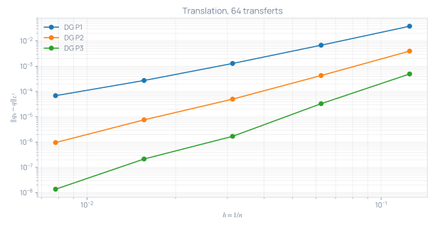
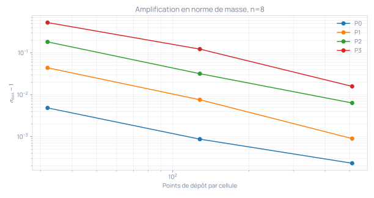
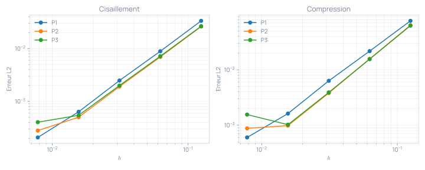

Rapport de campagne. Généré le 16/11/2026 à 07:50:01 (Europe/Paris).
1836 expériences enregistrées sur RTX 5090, dont 0 échecs d'exécution. Un calcul terminé n'est pas nécessairement une méthode validée : les résidus et les poids sont contrôlés séparément.
La voie semi-lagrangienne FE fonctionne sur les triangles testés : le transfert géométrique GPU conserve la masse et retrouve les ordres spatiaux attendus pour la translation. Le dépôt direct de points de quadrature peut conserver la masse tout en amplifiant des perturbations et en perdant la précision.
Une construction par cubature commune à moments compatibles a été implémentée. Sous deux identités de Gram et des poids non négatifs, une preuve donne conservation, reproduction de la constante et contraction en norme L2 pour un flot incompressible. Les petits cas acceptés illustrent ce mécanisme. Le coût et le conditionnement de la construction restent les obstacles principaux.
Une obstruction mathématique précise a aussi été identifiée : à déplacement non nul, une cellule qui n'échange aucune particule ne peut satisfaire simultanément les moments de degré un au départ et à l'arrivée, même avec des poids signés. Un support fixe intérieur aux éléments est donc insuffisant lorsque le pas tend vers zéro. Il faudra adapter les points aux interfaces et au flot.
Aucune nouveauté révolutionnaire n'est établie par cette campagne. Le résultat utile pour la suite est un choix de problème précis : construire cette compatibilité sans intersection de cellules courbes, avec un coût local ou quasi linéaire et un contrôle explicite de la faisabilité. Les travaux sur les remaps conservatifs, les projections compatibles et l'optimisation imposent une comparaison approfondie.
Toutes les simulations, localisations, intersections, projections, SVD et réductions numériques sont exécutées sur CUDA via CuPy. Symox génère et vérifie les bases et noyaux avant les calculs. Python pilote les lancements ; les figures et ce rapport sont produits sur l'hôte. Le code est un prototype de recherche dans experiments/slfe, pas encore un opérateur intégré au langage variationnel de Rodin.
Le domaine est un tore périodique 2D. Les maillages contiennent 2 n² triangles affines, avec sommets perturbés et diagonales variables. Le localisateur exploite leur origine en grille : il n'est pas un BVH pour maillages importés quelconques. Les espaces DG P0 à P3 sont modaux, orthonormaux en moyenne sur le triangle de référence. Le calcul est en double précision, sur un GPU et sans MPI.
Les profils lisses, trajectoires et références sont définis dans gpu.py et flows.py. Les erreurs FE sont intégrées par une quadrature de degré 18 indépendante de celle du transfert. Les extrema sont échantillonnés, et ne sont pas des bornes mathématiques certifiées. Les fichiers JSONL conservent paramètres, durées, échecs et empreintes SHA-256 du code.
| Campagne | Calculs | Échecs |
|---|---|---|
| translation | 170 | 0 |
| spectrum | 20 | 0 |
| cartesian | 56 | 0 |
| performance | 51 | 0 |
| long_time | 36 | 0 |
| deformation | 135 | 0 |
| moments | 80 | 0 |
| curved_moments | 36 | 0 |
| robustness | 1200 | 0 |
| support | 52 | 0 |
validation : statut True, 38 contrôles enregistrés.
validation-moments : statut True, 7 contrôles enregistrés.
geometry-control : statut True, 48 contrôles enregistrés.
Compute Sanitizer : ========= ERROR SUMMARY: 0 errors
Les contrôles comprennent les moments de quadrature contre une formule factorielle exacte, l'orthogonalité des bases, l'identité sans déplacement, les constantes, les bilans de masse, l'identité de l'adjoint, une seconde quadrature des intersections et le raffinement spatial. Une perte artificielle de 1 % de masse est rejetée par les tests. Les hypothèses de positivité et de compatibilité du candidat sont vérifiées avant toute interprétation de sa contraction.

| Degré | n | Erreur L2 | Taux final | Défaut masse |
|---|---|---|---|---|
| 1 | 128 | 6.86e-05 | 1.996 | 3.486e-14 |
| 2 | 128 | 9.603e-07 | 2.986 | 3.508e-14 |
| 3 | 128 | 1.374e-08 | 3.969 | 2.309e-14 |
| Degré | Transferts | Erreur L2 | Défaut masse | Énergie finale / initiale |
|---|---|---|---|---|
| 1 | 10000 | 0.0008001 | 1.546e-13 | 0.9948 |
| 2 | 10000 | 3.505e-06 | 1.557e-13 | 1 |
| 3 | 10000 | 7.465e-08 | 1.036e-13 | 1 |
Le temps long utilise une bosse périodique lisse et une durée finale de 10. Augmenter le nombre de projections peut augmenter l'erreur, même lorsque la trajectoire est exacte.
| Points / cellule | Erreur L2 | Défaut masse | Défaut constante |
|---|---|---|---|
| 6 | 4.436e+04 | 5.04e-14 | 2.774 |
| 16 | 0.4798 | 7.183e-14 | 1.225 |
| 32 | 0.3147 | 6.528e-14 | 0.7554 |
| 128 | 0.104 | 6.306e-14 | 0.2063 |
| 512 | 0.04278 | 6.595e-14 | 0.08453 |


Pour un cisaillement exactement incompressible, l'interpolation affine de la carte sur des triangles perturbés peut avoir un Jacobien différent de un. La densité transportée change alors même si le champ initial est constant. Le contrôle indépendant utilise la norme exacte avant projection, somme sur les cellules de aire(K) × (J_K − 1)² / J_K. La projection orthogonale ne peut qu'abaisser cette norme. Le maillage non perturbé sert de contrôle où ce défaut disparaît pour le cisaillement choisi.
Les poids sont ajustés pour reproduire les moments jusqu'au degré 2p dans chaque cellule de départ et d'arrivée. La note theory.pdf contient les hypothèses et la preuve. Les coefficients du transfert FE peuvent être signés ; la non-négativité des poids de cubature sert à la preuve d'énergie et ne constitue pas un limiteur de positivité du champ.
Sur les 80 cas du balayage principal, 36 satisfont simultanément le seuil de résidu relatif de moments (1e-9) et celui de non-négativité des poids (-1e-12 en rapport au poids initial). Ces nombres incluent les variantes et les échecs ; ils ne définissent pas un taux universel de succès.
| Subdivision | Résidu moments | Erreur L2 | L2 géométrique | Construction (s) |
|---|---|---|---|---|
| 1 | 0.3695 | 0.9261 | 0.002885 | 12.44 |
| 2 | 1.963e-15 | 0.002901 | 0.002885 | 21.95 |
| 3 | 1.048e-15 | 0.002888 | 0.002885 | 19.56 |
| 4 | 3.771e-15 | 0.002887 | 0.002885 | 11.77 |
La SVD dense établit un diagnostic de faisabilité sur de petits systèmes, mais ne constitue pas un algorithme compétitif de grand calcul. Le gradient conjugué sur les équations normales souffre du carré du conditionnement. Une correction grossière par modes de Fourier a été explorée sur le tore ; elle ne fournit pas à ce stade un préconditionneur général pour domaines non structurés.
La suppression irréversible des sites de poids négatif est une recherche active restreinte. Son échec ne prouve pas l'infaisabilité du problème positif. Une variante par projections de Dykstra est conservée comme diagnostic. Les cas dont les moments ne convergent pas ne bénéficient pas de la preuve de stabilité.
| Flot | Pas | Erreur L2 | Résidu moments | Accepté |
|---|---|---|---|---|
| shear | 1 | 0.005957 | 1.237e-15 | oui |
| shear | 4 | 0.5247 | 0.3659 | non |
| shear | 16 | 0.9448 | 0.4935 | non |
| compressible | 1 | 0.01818 | 1.714e-15 | oui |
| compressible | 4 | 0.6683 | 0.537 | non |
| compressible | 16 | 2.024 | 0.5606 | non |
Les lignes non acceptées documentent un échec de construction. Leur erreur de champ n'est pas une mesure de précision d'un opérateur satisfaisant le théorème.
L'étude du support sépare le petit déplacement et la réduction du degré des contraintes. Une cellule isolée n'échange aucune particule avec ses voisines. Pour une translation non nulle, la preuve de theory.pdf établit alors une incompatibilité exacte des premiers moments. Un critère numérique à tolérance finie ne remplace pas cette obstruction.
| Degré | Déplacement / h | Acceptés | Meilleur résidu | Cellules isolées, min. |
|---|---|---|---|---|
| 1 | 0.1 | 4/5 | 3.018e-16 | 0 |
| 1 | 0.01 | 0/5 | 0.01344 | 0 |
| 1 | 0.001 | 0/5 | 0.002354 | 0 |
| 1 | 0.0001 | 0/5 | 0.0002657 | 11 |
| 2 | 0.1 | 2/5 | 4.027e-16 | 0 |
| 2 | 0.01 | 0/5 | 0.02977 | 0 |
| 2 | 0.001 | 0/5 | 0.002943 | 0 |
| 2 | 0.0001 | 0/5 | 0.0003132 | 11 |
| Degré | Déplacement / h | Résidu moments | Valeur singulière max. |
|---|---|---|---|
| 1 | 0.173 | 7.12e-16 | 1.005 |
| 1 | 0.731 | 5.324e-16 | 1 |
| 1 | 1.37 | 4.804e-16 | 1 |
| 2 | 0.173 | 7.159e-16 | 1.015 |
| 2 | 0.731 | 2.113e-15 | 1.002 |
| 2 | 1.37 | 1.179e-15 | 1.003 |
Imposer seulement les moments de degré p peut préserver masse et constante, mais ne garantit pas les identités de Gram de degré 2p ni la contraction.
Robustesse : 1200 cas terminés, 889 acceptés selon les deux critères. Les graines de maillage, déplacements et densités de particules varient. Les cas restants doivent être traités comme des limites de la construction, pas comme des validations.
| Degré | Subdivision | Cas terminés | Acceptés |
|---|---|---|---|
| 1 | 2 | 200 | 160 |
| 1 | 3 | 200 | 158 |
| 1 | 4 | 200 | 124 |
| 2 | 2 | 200 | 127 |
| 2 | 3 | 200 | 160 |
| 2 | 4 | 200 | 160 |
Les noyaux Lambda 2,1 et Lambda 4,2 ont été reconstruits avec Symox à partir des contraintes mathématiques lues dans HySoP, puis évalués dans des kernels CUDA. Il s'agit d'une référence cartésienne des mêmes noyaux, pas d'un benchmark du runtime HySoP complet. Les moments exacts et leur réalisation GPU font l'objet de contrôles distincts.
| Degré | Champs | DDL / champ | Application (ms) | Blocs (Mo) |
|---|---|---|---|---|
| 1 | 1 | 393216 | 0.03059 | 63.94 |
| 1 | 4 | 393216 | 0.05971 | 63.94 |
| 1 | 16 | 393216 | 0.206 | 63.94 |
| 2 | 1 | 786432 | 0.1669 | 236.6 |
| 2 | 4 | 786432 | 0.1991 | 236.6 |
| 2 | 16 | 786432 | 0.5727 | 236.6 |
| 3 | 1 | 1310720 | 0.4269 | 645.8 |
| 3 | 4 | 1310720 | 0.4788 | 645.8 |
| 3 | 16 | 1310720 | 1.481 | 645.8 |
Les temps d'application sont des médianes d'événements CUDA après échauffement et incluent la remise à zéro du résultat. Les lancements Python, les caches et la fréquence du GPU peuvent affecter les petits temps. Les temps de construction uniques peuvent inclure la compilation paresseuse d'opérations CuPy ; ils ne doivent pas être pris pour des mesures asymptotiques stabilisées.
Pour une vitesse constante, les blocs sont construits une fois puis réutilisés. Un flot variable peut imposer une reconstruction à chaque pas : il faut alors inclure ce coût, ainsi que les trajectoires. Aucun gain global face à un solveur eulérien GPU n'est établi ici, et aucune comparaison CPU/GPU n'a été réalisée.
La contribution à viser serait une construction de transfert garantissant masse, consistance et énergie, capable de traiter des caractéristiques courbes sans intersections coûteuses et avec un coût GPU mesuré à précision comparable. L'égalité des deux Gram fournit un cahier des charges mathématique ; son établissement efficace est le problème ouvert mis en évidence par cette campagne.
Les prochaines preuves doivent porter sur l'existence de poids pour un support transporté, la consistance et la convergence, le comportement quand le pas tend vers zéro et le coût du solveur. Les prochaines expériences doivent dépasser le localisateur de grille, inclure un vrai concurrent eulérien GPU, des vitesses FE, les frontières et la 3D. Une revendication de nouveauté doit distinguer cette construction des remaps par optimisation et des projections compatibles existantes.
A nearly-conservative, high-order, forward Lagrange–Galerkin method for the resolution of scalar hyperbolic conservation laws. Antécédent direct cité dans la note initiale. L'accès au texte via le DOI a échoué pendant cette session ; ne pas prétendre à une lecture intégrale.
A nearly-conservative, high-order, forward Lagrange–Galerkin method for the resolution of compressible flows on unstructured triangular meshes. Le résumé décrit des espaces continus d'ordre élevé sur triangles et des bilans conservés sous intégration exacte. La combinaison forward, triangles, ordre élevé n'est pas nouvelle.
A high order conservative semi-Lagrangian discontinuous Galerkin method for two-dimensional transport simulations. Antécédent SL-DG conservatif d'ordre élevé, avec intégration géométrique et formulation de Galerkin caractéristique.
A Third-order Conservative Semi-Lagrangian Discontinuous Galerkin Scheme For the Transport Equation on Curvilinear Unstructured Meshes. Prépublication de novembre 2025. Le résumé annonce un schéma d'ordre trois sur triangles curvilignes et un transfert conservatif par intersections. Concurrent essentiel pour un projet de papier.
Arbitrary-Order Conservative and Consistent Remapping and a Theory of Linear Maps: Part I. Théorie algébrique antérieure des transferts conservatifs et cohérents. Les seules contraintes de masse et de constante ne suffisent pas comme revendication originale.
Arbitrary-Order Conservative and Consistent Remapping and a Theory of Linear Maps: Part II. Extension comprenant des transferts FE vers FE. Comparaison indispensable de la construction des opérateurs et de leurs contraintes.
Optimization-based remap and transport: A divide and conquer strategy for feature-preserving discretizations. Le remaillage par optimisation et contraintes de conservation est établi. L'optimisation de poids ne constitue pas en elle-même une nouveauté.
Stable Coupling of Nonconforming, High-Order Finite Difference Methods. Antécédent des projections compatibles avec une norme d'énergie et d'un espace intermédiaire. Le lien avec la proposition de Gram doit être étudié avant toute revendication théorique.
An explicit semi-Lagrangian, spectral method for solution of Lagrangian transport equations in Eulerian-Lagrangian formulations. Particules initialisées aux points de Gauss et reconstruction par moindres carrés avec contraintes de masse et d'énergie. Antécédent proche du vocabulaire proposé.
Metrics for Intercomparison of Remapping Algorithms (MIRA) protocol applied to Earth system models. Cadre de comparaison des erreurs, de la conservation et des effets de transferts répétés.
Sources : branche SLFE du fork keckj/rodin, répertoire experiments/slfe. Aucune publication vers cbritopacheco/rodin. Les résultats complets sont dans le répertoire slfe-results ; les données de synthèse et le rapport sont copiés sur la branche lors de la publication.
python3 experiments/slfe/symbolic.py python3 experiments/slfe/validate.py --output /tmp/slfe-validation.json python3 experiments/slfe/campaign.py --suite translation --output /tmp/slfe-results python3 experiments/slfe/research.py --suite moments --output /tmp/slfe-results python3 experiments/slfe/report.py --input /tmp/slfe-results --output /tmp/slfe-report